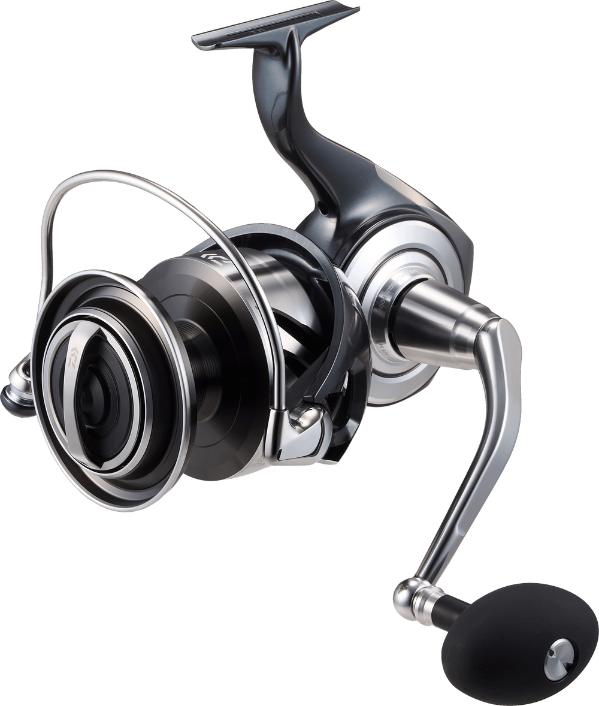

ReelCalc Reel Setup Guide
Daiwa Certate SW 2026 8000-H Line Capacity & Reel Setup Guide
For an offshore spinning setup where line reserve matters, the 2026 Certate SW 8000-H starts with a published J-Braid capacity of 50 lb / 280 yards. Its listed 43.4-inch retrieve and 5.6:1 gearing give you a reference for jigging or working saltwater lures. Daiwa's POWERDRIVE DESIGN belongs to this 2026 generation. Choose your line below to estimate a full fill or optional backing.